Họ tên: Trần Lê Phúc An
Lớp: DH23DTA
GIỚI THIỆU CHUNG VỀ KHOA CÔNG NGHỆ THÔNG TIN:

page của khoa:
Tổng quan: · Thành lập năm 2001 theo giấy phép số: 2052/QĐ-BGD&ĐT-TCCB
ngày 27/04/2001 của Bộ Giáo Dục Và Đào Tạo.
· Khoa có ba bộ môn: Hệ Thống Thông Tin, Mạng Máy Tính, Công Nghệ Phần
Mềm.
Requirements
Lab1: Design a user interface (UI) for a course management system based on the following database table structure for a Course. Ensure the UI reflects the necessary fields and actions to create, view, and update courses.UI Requirements:: This field should be auto-generated by the system, so it doesn't need to be editable by the user. Display this value when viewing or editing a course.: Create an input field that allows the user to enter the course name. This field should be required and should accept up to 255 characters.: Include a text area for users to provide a detailed description of the course. This field can be optional but should allow longer text.: Display a dropdown or search functionality that allows users to select the course's instructor from the list of existing users. This field references the created_by field, which is linked to the User table.: Display the timestamp indicating when the course was created. This value should be automatically generated and displayed to the user, but not editable.: Display the last updated timestamp. This value should be automatically updated by the system whenever changes are made to the course and should not be editable by users.: : Provide a button or form submission option to allow users to create a new course with the specified details. : Allow users to modify the course_name, course_description, and created_by fields while showing the auto-generated fields like course_id, created_at, and updated_at in read-only mode. : Include a page or modal for viewing the details of a course without editing it. : Optionally, provide a button to delete a course, ensuring that confirmation prompts are in place before deletion. The UI should be intuitive, with clear labels and validation for required fields like course_name.
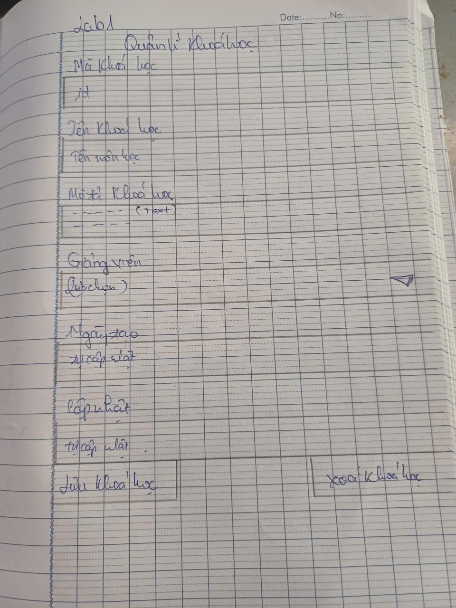Lab2:Students should authenticate before accessing the system. Username/Email Password Login button Forgot Password link Simple, clean, and secure login screen. After login, students should land on a dashboard that displays available exercises to choose from. Display exercises grouped by programming language (C, Python, Java). Exercise title Short description Difficulty level (Easy/Medium/Hard) Time limit (if any) Points or grades attached (optional) Allow students to filter exercises by programming language. To search for exercises based on keywords. Indicate whether an exercise has been completed, in progress, or not started. Select an exercise View exercise details Once an exercise is selected, students are taken to a coding environment to implement their solution. Display the exercise title and description at the top. Syntax highlighting for C, Python, Java Line numbers and auto-complete Language switcher (to select the language) Pre-loaded template (based on the selected language) Instructions and constraints provided for the exercise Display predefined test cases with expected input/output Allow students to create and run their own test cases (optional) Run Code button to compile and run the code Clear Code button to reset the editor Submission button to submit the final solution for grading Run the code (compile + execute) Submit the code After submission, students should see the results of their submission. Status (Success/Failed/Compilation Error/Time Limit Exceeded) Output Show actual output versus expected output for each test case. List all test cases with Input Expected output Actual output Status (Passed/Failed) Show score based on test cases passed If there are multiple test cases, show how many passed Display performance metrics like time taken and memory used (if applicable). Try again button to return to the code editor for improvements Return to dashboard button Show rankings based on student performance (optional, for competitive environments). Allow students to leave feedback on exercises or ask for help. Provide a hint button that can be used a limited number of times. Allow students to save their progress and return later to complete the exercise. Code execution should happen in isolated environments (containers or sandboxes) for security reasons. Limit execution time to prevent infinite loops. Store previous attempts so students can review their submissions. Each screen should have a simple design with minimal distractions. Ensure the system is mobile-friendly so students can work from any device. Clearly communicate syntax and runtime errors to students.
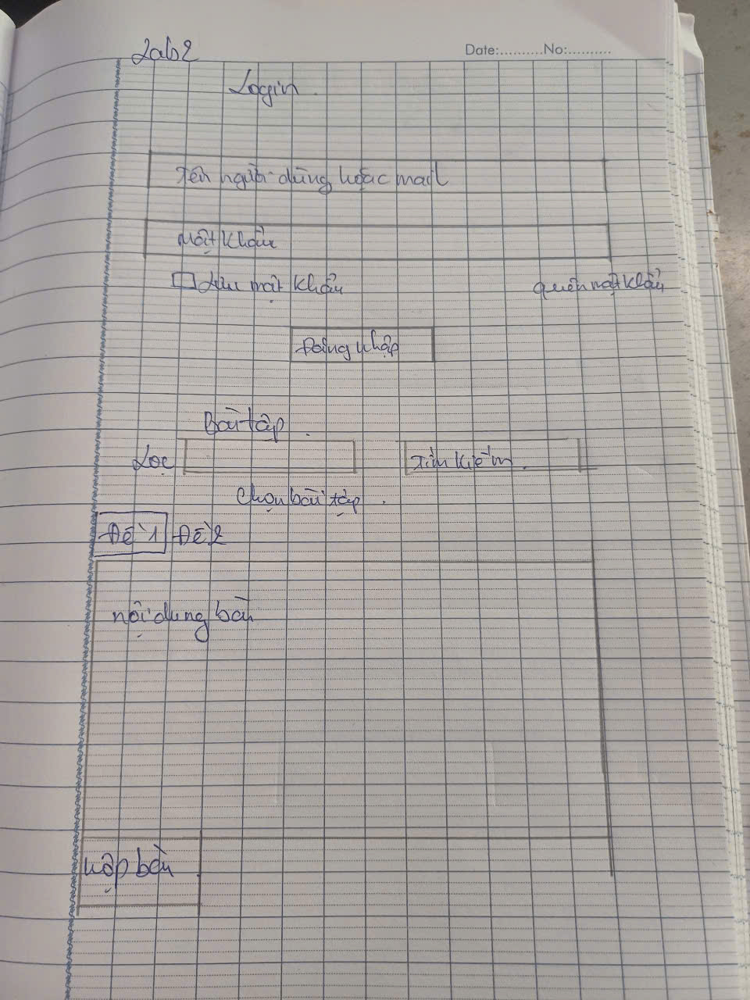Lab3: Các bạn thể hiện cho cô chức năng: chia sẻ tài liệu học tập cho sinh viên theo môn học. Mỗi môn học có thể chia sẻ các tài liệu như Bài giảng / Bài tập / Tài liệu tham khảo.
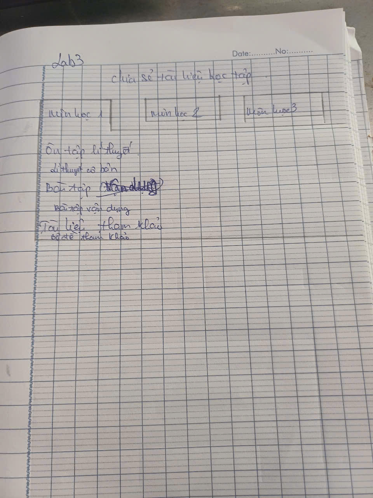Lab4:
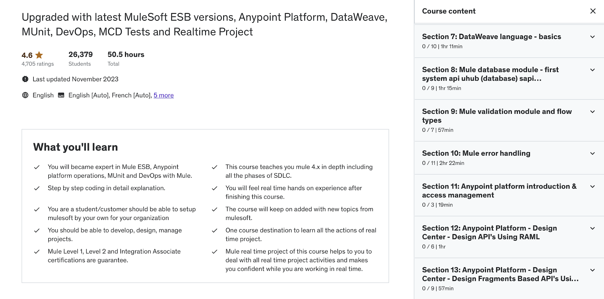Lab5:
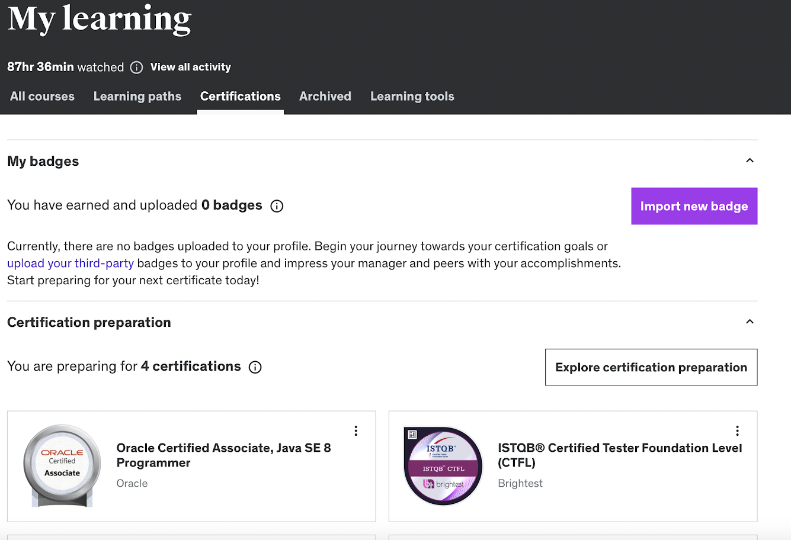 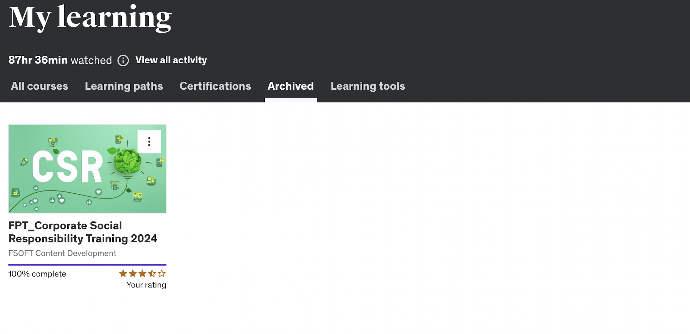 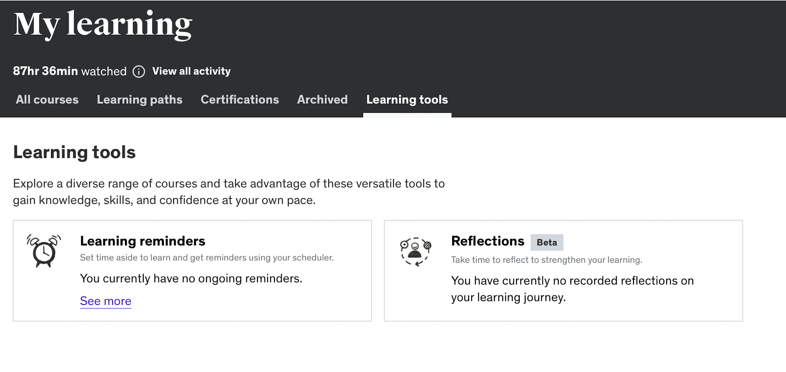Lab6:
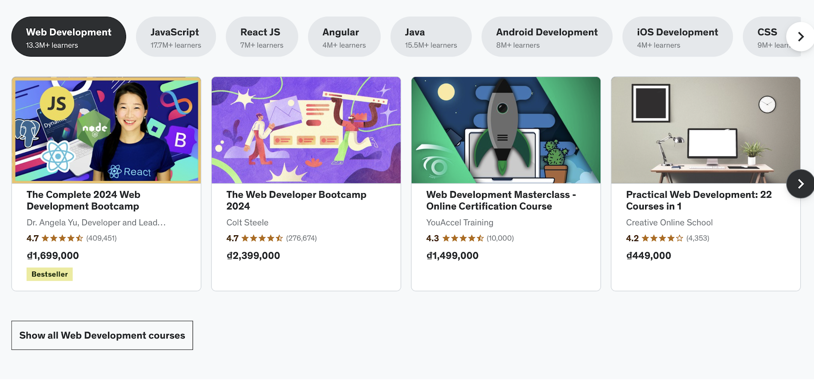 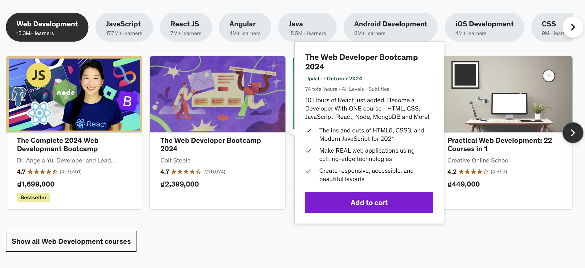 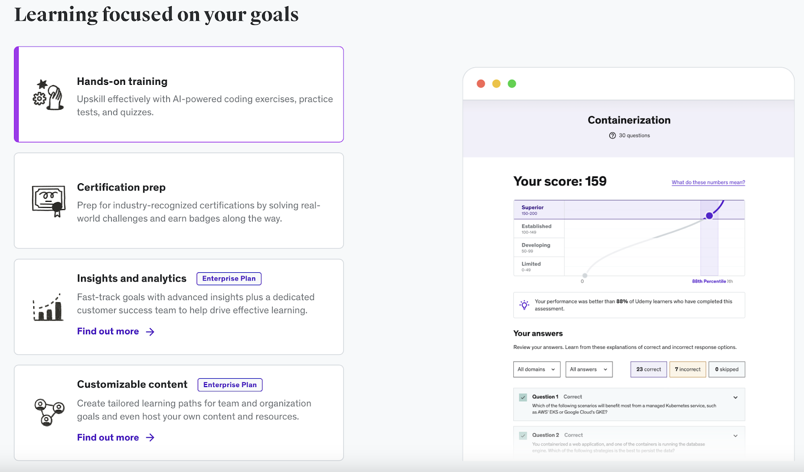 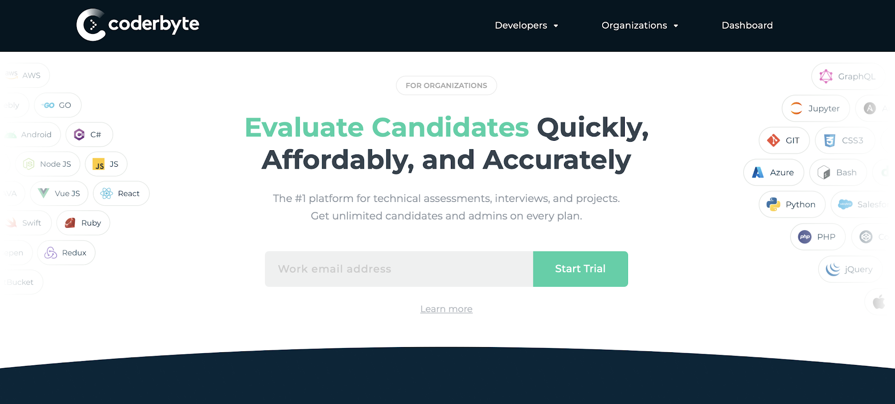